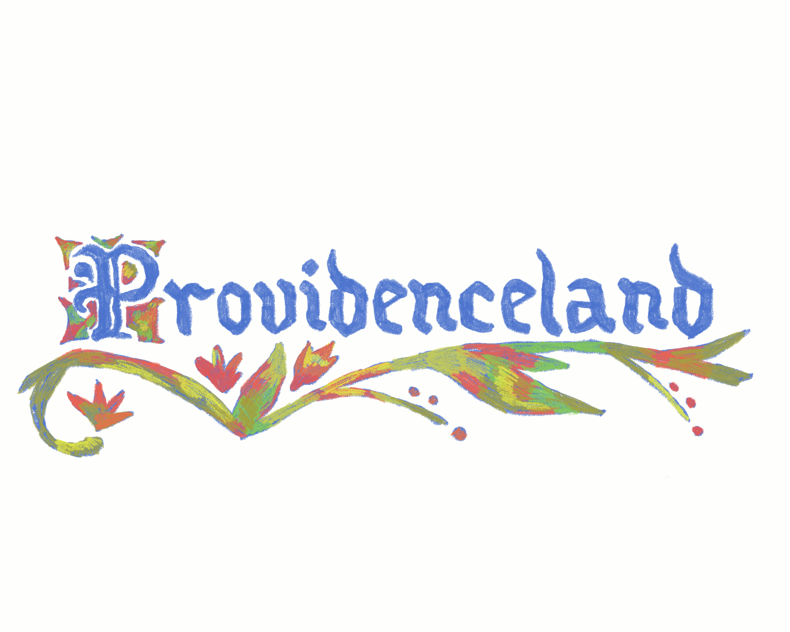
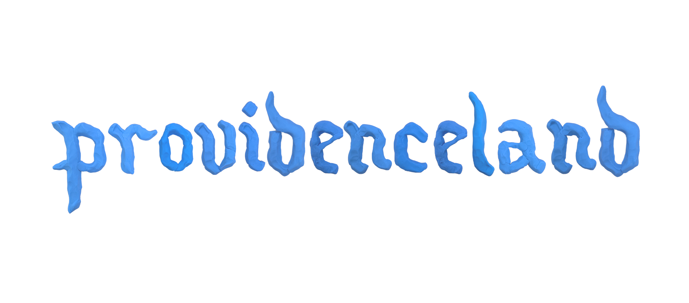
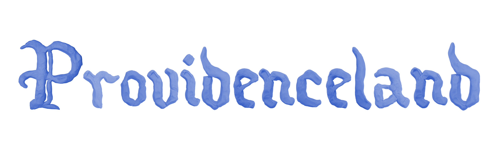
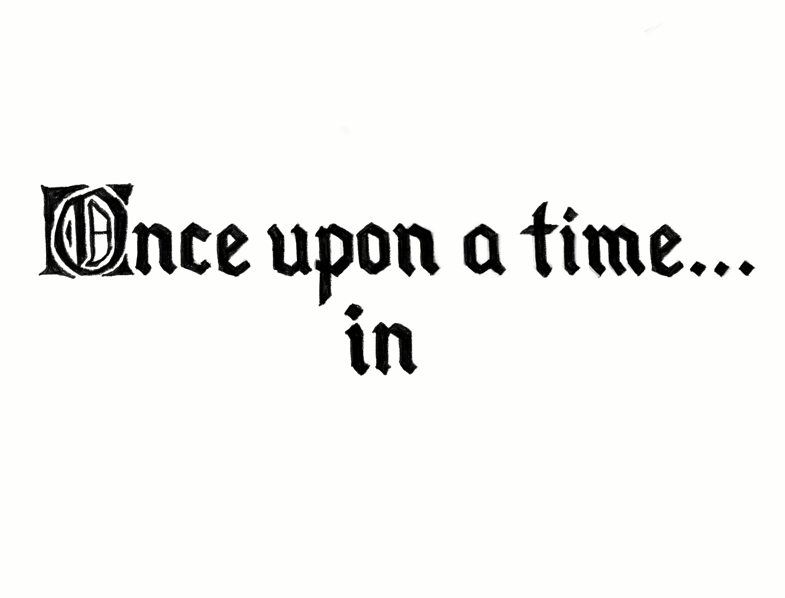
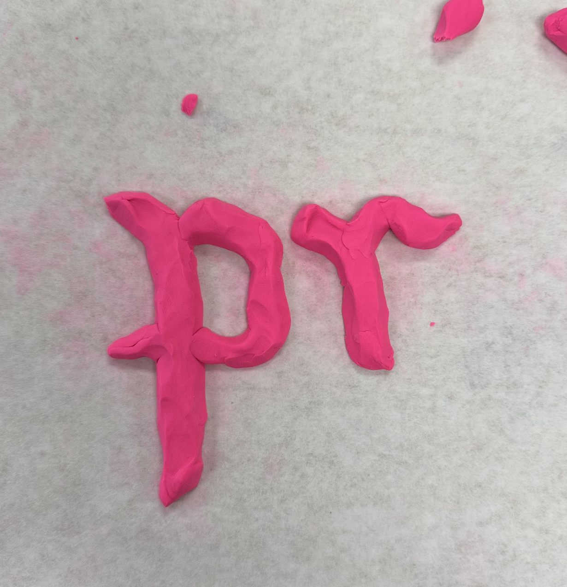

Title card for Nora Guttman's film, Providenceland. The film follows two young knights on a quest for the King. I built the lettering out of clay, colored it in by hand, and animated it for the opening.




